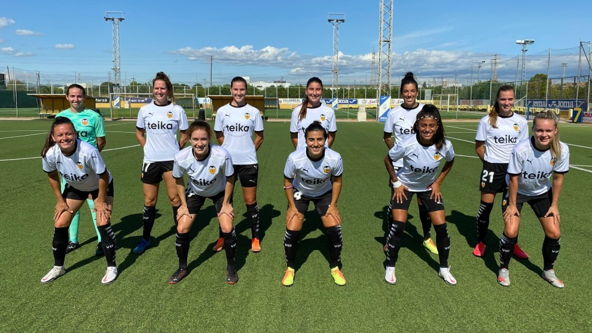
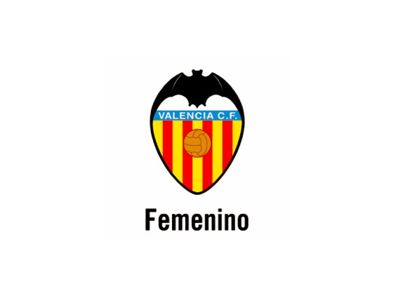

Informació del València Femeni
El Valencia Club de Fútbol Femenino és un club de fútbol femenino espanyol localitzat en la ciutat de València que juga en la Primera Divisió Femenina, màxima competició futbolística en Espanya.
L'equip sorgeix en 1998, quan un grup de noies va demanar la creació d'un equip de futbol femení en el Col·legi Alemany de València. S'inscriu en la Federació Valenciana per disputar una competició oficial per primera vegada en la temporada 1999-2000, i competeixen amb el nom de Deutscher Sportverein València, encara que l'equip és més conegut en els seus primers anys per l'acrònim DSV. L'equip va ascendir a la Superlliga i amb l'arribada a l'elit d'el futbol espanyol el club va tenir més facilitats per aconseguir bones jugadores, fins i tot descarts de l'campió de lliga el Llevant U. D. Més endevant és va canviar el nom de Deutscher Sportverein València per València CF.
 